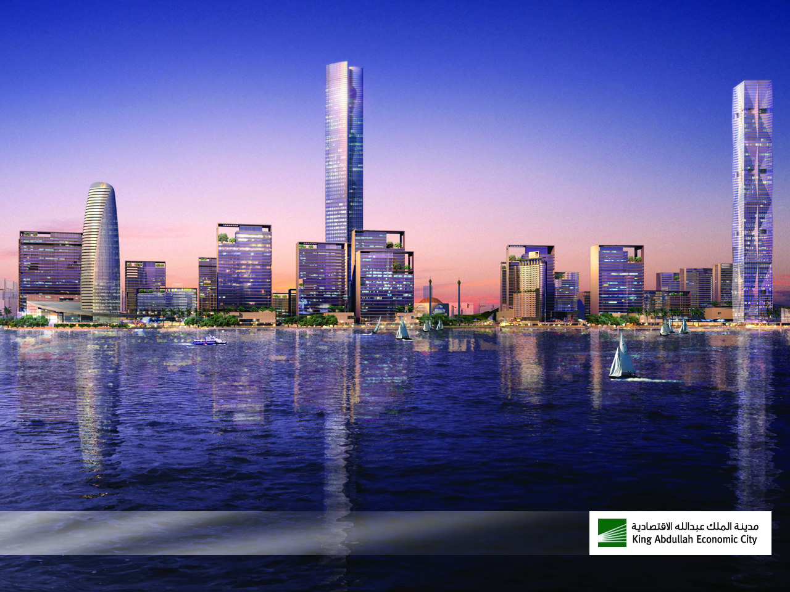
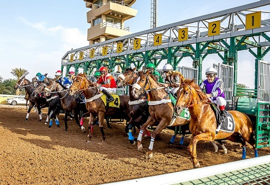
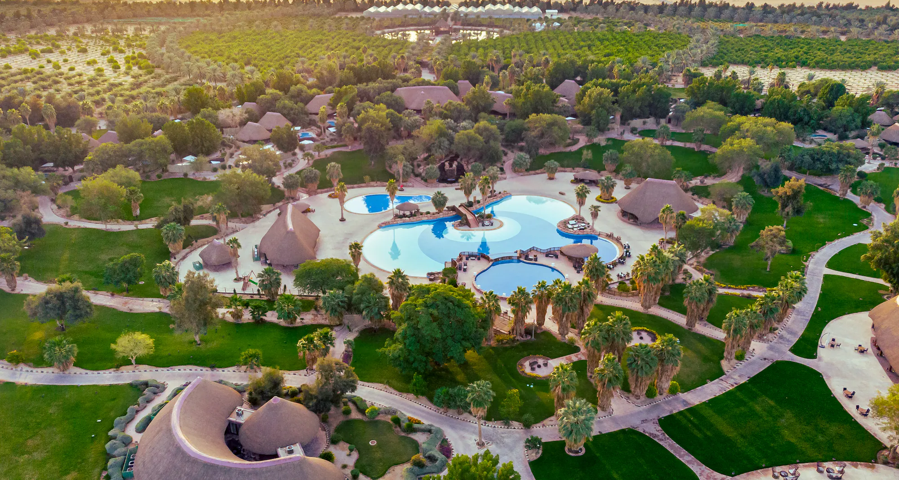
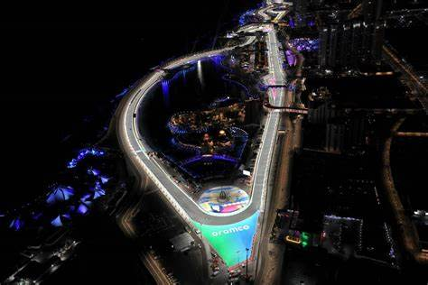
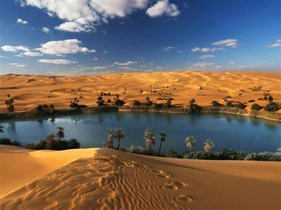
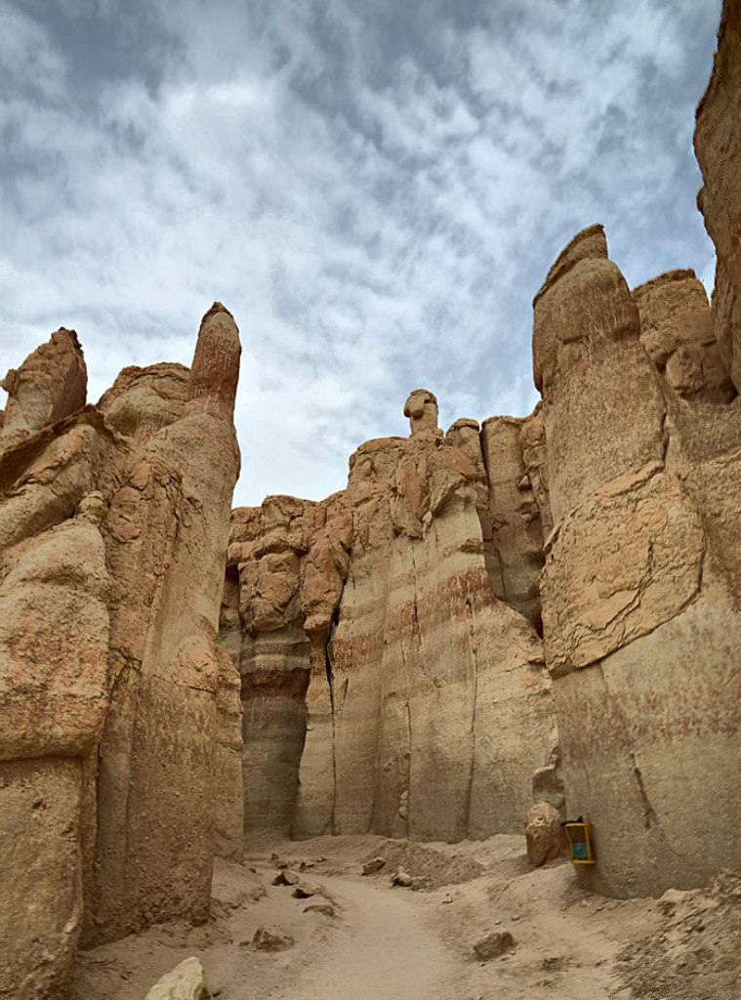
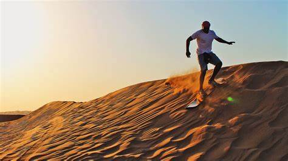
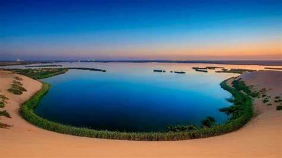

مدينة الملك عبدالله الاقتصادية
مدينة سعودية مستحدثة ذات طابع اقتصادي أعلن عن إنشائها خادم الحرمين الشريفين الملك عبد الله بن عبد العزيز عام 2005م وتقع في محافظة رابغ منطقة مكة المكرمة

منتزة الرياض للطيران الشراعي
هو مكان رائع للاستمتاع بالمناظر الخلابة من الأعلى. يقع في الرياض، المملكة العربية السعودية، ويوفر تجربة الطيران الشراعي المعلقة التي تستمر من 10 إلى 12 دقيقة. يمكنك الاستمتاع بالمناظر الخلابة

الحديقة الوطنية بعسير
أحد المناطق البرية في المملكة التي لم يمسها أحد واحد من ابرز معالم السياحة في السعودية هو أول منتزه وطني في المملكة العربية السعوديةهي عبارة عن محمية طبيعية تمتد من قمم عسير ومدرج أبها

نادي الفروسية بالرياض
نادي سباقات الخيل (نادي الفروسية سابقا) بالرياض هو ناد سعودي لتنظيم سباقات الخيل الأصيل. تأسس رسميا سنة 1965 الموافق 1385 هـ ويمثل المملكة في المنظمات الدولية.

نادي الجولف بالرياض
هو نادي جولف يقع في العاصمة السعودية الرياض، ويتميز بمجموعة كاملة من مرافق الجولف والمرافق الترفيهية المذهلة.ويشمل الملعب مواقع تسديد مميّزة مثل موقع الضربة الخامسة

ملعب الملك فهد الدولي
مدينة الملك فهد الرياضية (الإسم السابق: ستاد الملك فهد الدولي)في مدينة الرياض وسط السعودية، يقع في الجزء الشرقي من المدينة. ويلقب بـ«استاد الخيمة» وبـ«درة الملاعب»،

حلبة الكورنيش جدة
هي حلبة سباق سيارات مؤقتة، على كورنيش محافظة جدة على ساحل البحر الأحمر في المملكة العربية السعودية، يبلغ طولها 6,174م، وتُعدُّ أطول حلبة شوارع في سباقات فورمولا 1 بالعالم

مدينة الملك عبدالله الرياضية
في مدينة جدة غرب السعوديةحتوي المدينة على ملعب مدينة الملك عبد الله الرياضية ملعب كرة قدم وصالة مدينة الملك عبد الله الرياضية، وصالة ألعاب رياضية ومسجد مدينة الملك عبد الله الرياضية وثلاثة ملاعب رديفة ومواقف سيارات.

واجهة الدمام البحرية
يتميز المشروع بالفخامة وبمساحة كبيرة حيث بلغ طوله 4 كيلو مترات ويشتمل على ممشى للزوار بلغ طوله 8 كيلو مترات مما يجعله أطول من واجهة مدينة الخبر لمرتين ونصف المرة.

موسم الرياض
هو مهرجان ترفيهي عالمي يقام في مدينة الرياض عاصمة المملكة العربية السعودية، ويهدف لتحويلها إلى وجهة ترفيهية سياحية عالمية، وفقا لأهداف برنامج جودة الحياة أحد برامج رؤية السعودية 2030.

محمية التيسية الطبيعية
تغطي محمية التيسية، المعروفة أيضاً باسم محمية الإمام تركي بن عبدالله الطبيعية، مساحة 91،500 كيلومتر مربع، وقد تم إنشاؤها للحفاظ على النظام البيئي الطبيعي والتنوع البيولوجي لمنطقة هضبة سومان في

جبل القارة في الاحساء
ويُعرَف أيضاً بجبل الشبعان يقع بين قرية التويثير وقرية القارة بمحافظة الأحساء، في المنطقة الشرقية من المملكة العربية السعودية. يُعد الجبل من أبرز المعالم السياحية الطبيعية في الأحساء

صحراء الثمامة
منطقة صحراوية في شمال مدينة الرياض في المملكة العربية السعودية، تعدّ من المناطق السياحية المتميزة لمن يريد قضاء أوقات ممتعة في الصحراء، تمتاز برمالها الذهبية الرائعة والمنتزهات الترفيهية المتناثرة على أرجائها.
